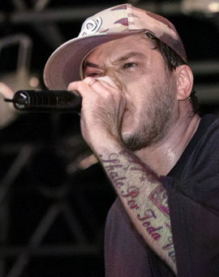
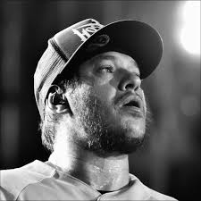
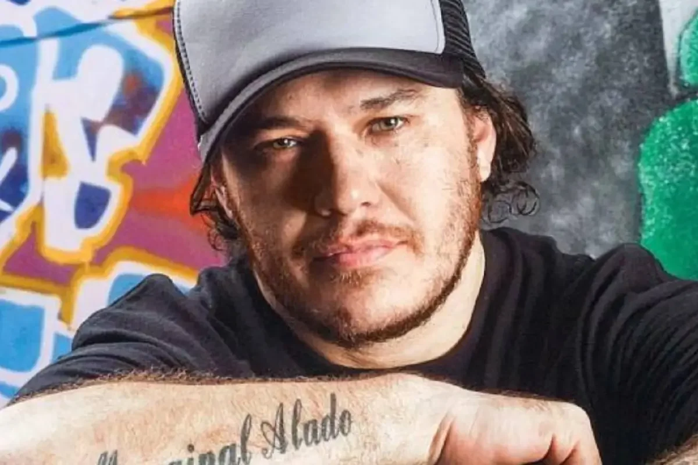

Chorão
Voltar
Sobre Chorão
Chorão foi um cantor, compositor e líder da banda Charlie Brown Jr., um dos maiores nomes do rock brasileiro.
Fotos



Discos e Conquistas
- Álbum "Ritmo, Ritual e Responsa" (1996).
- Álbum "Acústico MTV" (2006).
- Prêmios de Melhor Álbum de Rock em diversos anos.